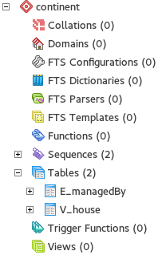
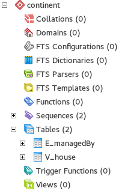
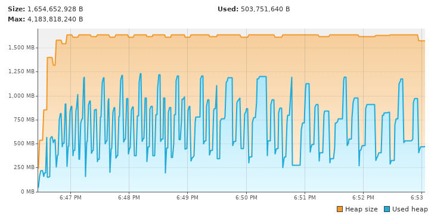

Sqlg  is a implementation of Apache TinkerPop on a
RDBMS.
Currently Postgresql, HSQLDB, H2,
MariaDB, MySQL and
MSSqlServer are supported.
is a implementation of Apache TinkerPop on a
RDBMS.
Currently Postgresql, HSQLDB, H2,
MariaDB, MySQL and
MSSqlServer are supported.
Sqlg has a google group forum
1. Introduction
Sqlg primary challenge is to reduce latency by combining TinkerPop steps into as few as possible database calls. The fine grained nature of graph traversals makes this crucial else the remote call latency has a severe performance impact.
Sqlg supports various bulk modes to reduce latency when modifying the graph.
|
Note
|
Hsqldb and H2 do not suffer the same latency as Postgresql, MSSqlServer and MariaDB as it runs embedded in the jvm. |
2. License

3. TinkerPop supported features
Sqlg version 2.0.0 runs on TinkerPop 3.3.3.
Sqlg passes TinkerPop’s StructureStandardSuite and ProcessStandardSuite test suites.
-
Computer
-
ThreadedTransactions
-
Variables
-
MultiProperties
-
MetaProperties
-
UserSuppliedIds
-
NumericIds
-
StringIds
-
UuidIds
-
CustomIds
-
AnyIds
-
UserSuppliedIds
-
NumericIds
-
StringIds
-
UuidIds
-
CustomIds
-
AnyIds
-
AddProperty
-
RemoveProperty
-
UserSuppliedIds
-
NumericIds
-
StringIds
-
UuidIds
-
CustomIds
-
AnyIds
-
MapValues
-
MixedListValues
-
SerializableValues
-
UniformListValues
-
MapValues
-
MixedListValues
-
SerializableValues
-
UniformListValues
|
Note
|
Sqlg supports user supplied ids but not quite as defined by TinkerPop. This is explained below. |
4. Limitations
Postgresql schema, table and column names can not be more than 63 characters long.
5. Getting Started
5.1. Maven coordinates
<dependency>
<groupId>org.umlg</groupId>
<artifactId>sqlg-postgres</artifactId>
<version>2.0.0</version>
</dependency>
<dependency>
<groupId>org.umlg</groupId>
<artifactId>sqlg-hsqldb</artifactId>
<version>2.0.0</version>
</dependency>
<dependency>
<groupId>org.umlg</groupId>
<artifactId>sqlg-h2</artifactId>
<version>2.0.0</version>
</dependency>
<dependency>
<groupId>org.umlg</groupId>
<artifactId>sqlg-mariadb</artifactId>
<version>2.0.0</version>
</dependency>
<dependency>
<groupId>org.umlg</groupId>
<artifactId>sqlg-mysql</artifactId>
<version>2.0.0</version>
</dependency>
<dependency>
<groupId>org.umlg</groupId>
<artifactId>sqlg-mssqlserver</artifactId>
<version>2.0.0</version>
</dependency>
This will include gremlin-groovy. If you have no need for that then use the following coordinates.
<dependency>
<groupId>org.umlg</groupId>
<artifactId>sqlg-postgres-dialect</artifactId>
<version>2.0.0</version>
</dependency>
<dependency>
<groupId>org.umlg</groupId>
<artifactId>sqlg-hsqldb-dialect</artifactId>
<version>2.0.0</version>
</dependency>
<dependency>
<groupId>org.umlg</groupId>
<artifactId>sqlg-h2-dialect</artifactId>
<version>2.0.0</version>
</dependency>
<dependency>
<groupId>org.umlg</groupId>
<artifactId>sqlg-mariadb-dialect</artifactId>
<version>2.0.0</version>
</dependency>
<dependency>
<groupId>org.umlg</groupId>
<artifactId>sqlg-mysql-dialect</artifactId>
<version>2.0.0</version>
</dependency>
<dependency>
<groupId>org.umlg</groupId>
<artifactId>sqlg-mssqlserver-dialect</artifactId>
<version>2.0.0</version>
</dependency>
5.2. Start
SqlgGraph is a singleton that can be shared among multiple threads. You instantiate SqlgGraph using the standard
TinkerPop static constructors.
-
Graph g = SqlgGraph.open(final Configuration configuration) -
Graph g = SqlgGraph.open(final String pathToSqlgProperties)
The configuration object requires the following properties.
jdbc.url=jdbc:postgresql://localhost:5432/yourdb jdbc.username=postgres jdbc.password=******
jdbc.url=jdbc:hsqldb:file:/tmp/yourdb jdbc.username=SA jdbc.password=
jdbc.url=jdbc:h2:file:target/tmp/yourdb jdbc.username=SA jdbc.password=
jdbc.url=jdbc:mariadb://localhost:3306/?useSSL=false jdbc.username=mariadb jdbc.password=mariadb
jdbc.url=jdbc:mysql://localhost:3306/?useSSL=false jdbc.username=mysql jdbc.password=mysql
jdbc.url=jdbc:sqlserver://localhost:1433;databaseName=yourdb; jdbc.username=SA jdbc.password=*****
In the case of Postgresql and MSSqlServer the database must already exist.
Once you have access to the graph you can use it as per normal.
@Test
public void useAsPerNormal() {
Vertex person = this.sqlgGraph.addVertex(T.label, "Person", "name", "John");
Vertex address = this.sqlgGraph.addVertex(T.label, "Address", "street", "13th");
person.addEdge("livesAt", address, "since", LocalDate.of(2010, 1, 21));
this.sqlgGraph.tx().commit(); (1)
List<Vertex> addresses = this.sqlgGraph.traversal().V().hasLabel("Person").out("livesAt").toList();
assertEquals(1, addresses.size());
}-
It is very important to always commit or rollback the transaction. If you do not connections to the database will remain open and eventually the connection pool with run out of connections.
5.3. Gremlin Console
[pieter@pieter-laptop bin]$ ./gremlin.sh
\,,,/
(o o)
-----oOOo-(3)-oOOo-----
plugin activated: tinkerpop.server
plugin activated: tinkerpop.utilities
plugin activated: tinkerpop.tinkergraph
gremlin> :install org.umlg sqlg-postgres 2.0.0.
==>Loaded: [org.umlg, sqlg-postgres, 2.0.0]
gremlin> :plugin list
==>tinkerpop.server[active]
==>tinkerpop.gephi
==>tinkerpop.utilities[active]
==>tinkerpop.sugar
==>tinkerpop.credentials
==>tinkerpop.tinkergraph[active]
==>sqlg.postgres
gremlin> :plugin use sqlg.postgres
==>sqlg.postgres activated
gremlin> graph = SqlgGraph.open('pathTo/sqlg.properties')
==>sqlggraph[SqlGraph]
gremlin> g = graph.traversal()
==>sqlggraphtraversalsource[sqlggraph[SqlGraph] (jdbc:postgresql://localhost:5432/sqlgraphdb), standard]
gremlin> graph.io(graphml()).readGraph('pathTo/grateful-dead.xml')
==>null
gremlin> g.V().count()
==>808
gremlin>
[pieter@pieter-laptop bin]$ ./gremlin.sh
\,,,/
(o o)
-----oOOo-(3)-oOOo-----
plugin activated: tinkerpop.server
plugin activated: tinkerpop.utilities
plugin activated: tinkerpop.tinkergraph
gremlin> :install org.umlg sqlg-hsqldb 2.0.0.
==>Loaded: [org.umlg, sqlg-hsqldb, 2.0.0]
gremlin> :plugin list
==>tinkerpop.server[active]
==>tinkerpop.gephi
==>tinkerpop.utilities[active]
==>tinkerpop.sugar
==>tinkerpop.credentials
==>tinkerpop.tinkergraph[active]
==>sqlg.hsqldb
gremlin> :plugin use sqlg.hsqldb
==>sqlg.hsqldb activated
gremlin> graph = SqlgGraph.open('pathTo/sqlg.properties')
==>sqlggraph[SqlGraph]
gremlin> g = graph.traversal()
==>sqlggraphtraversalsource[sqlggraph[SqlGraph] (jdbc:hsqldb:file:src/test/db/sqlgraphdb), standard]
gremlin> graph.io(graphml()).readGraph('pathTo/grateful-dead.xml')
==>null
gremlin> g.V().count()
==>808
gremlin>
[NOTE] If it is the first time to install sqlg, then you need to restart the gremlin console. If not the class-loaders are confused and can not load Sqlg's sqlg.plugin
6. Data types
| Java | Postgresql | HSQLDB | H2 | MariaDB | MSSqlServer |
|---|---|---|---|---|---|
Boolean |
BOOLEAN |
BOOLEAN |
BOOLEAN |
BOOLEAN |
BIT |
Byte |
Not supported |
TINYINT |
TINYINT |
TINYINT |
TINYINT |
Short |
SMALLINT |
SMALLINT |
SMALLINT |
SMALLINT |
SMALLINT |
Integer |
INTEGER |
INTEGER |
INT |
INTEGER |
INT |
Long |
BIGINT |
BIGINT |
BIGINT |
BIGINT |
BIGINT |
Float |
REAL |
Not supported |
REAL |
Not supported |
REAL |
Double |
DOUBLE PRECISION |
DOUBLE |
DOUBLE |
DOUBLE |
DOUBLE PRECISION |
String |
TEXT |
LONGVARCHAR |
VARCHAR |
LONGTEXT |
VARCHAR(2000) |
String (fixed length) |
VARCHAR(x) |
VARCHAR(x) |
VARCHAR(x) |
VARCHAR(x) |
VARCHAR(x) |
Boolean[] |
BOOLEAN[] |
BOOLEAN ARRAY DEFAULT ARRAY[] |
ARRAY |
BOOLEAN ARRAY DEFAULT ARRAY[] |
Not supported |
Byte[] |
BYTEA |
LONGVARBINARY |
BINARY |
BLOB |
VARBINARY(max) |
Short[] |
SMALLINT[] |
SMALLINT ARRAY DEFAULT ARRAY[] |
ARRAY |
Not supported |
Not supported |
Integer[] |
INTEGER[] |
INTEGER ARRAY DEFAULT ARRAY[] |
ARRAY |
Not supported |
Not supported |
Long[] |
BIGINT[] |
BIGINT ARRAY DEFAULT ARRAY[] |
ARRAY |
Not supported |
Not supported |
Float[] |
REAL[] |
Not supported |
ARRAY |
Not supported |
Not supported |
Double[] |
DOUBLE PRECISION[] |
DOUBLE ARRAY DEFAULT ARRAY[] |
ARRAY |
Not supported |
Not supported |
String[] |
TEXT[] |
LONGVARCHAR ARRAY DEFAULT ARRAY[] |
ARRAY |
Not supported |
Not supported |
java.time.LocalDateTime |
TIMESTAMP WITH TIME ZONE |
TIMESTAMP WITH TIME ZONE |
TIMESTAMP |
DATETIME(3) |
DATETIME2(3) |
java.time.LocalDate |
DATE |
DATE |
DATE |
DATE |
DATE |
java.time.LocalTime |
TIME WITH TIME ZONE |
TIME WITH TIME ZONE |
TIME |
TIME |
TIME |
java.time.ZonedDateTime |
TIMESTAMP WITH TIME ZONE, TEXT |
TIMESTAMP WITH TIME ZONE, LONGVARCHAR |
TIMESTAMP, VARCHAR |
DATETIME(3), TINYTEXT |
DATETIME2(3), VARCHAR(255) |
java.time.Period |
INTEGER, INTEGER, INTEGER |
INTEGER, INTEGER, INTEGER |
INT, INT, INT |
INTEGER, INTEGER, INTEGER |
INT, INT, INT |
java.time.Duration |
BIGINT, INTEGER |
BIGINT, INTEGER |
BIGINT, INT |
BIGINT, INTEGER |
BIGINT, INT |
java.time.LocalDateTime[] |
TIMESTAMP WITH TIME ZONE[] |
TIMESTAMP WITH TIME ZONE ARRAY DEFAULT ARRAY[] |
ARRAY |
Not supported |
Not supported |
java.time.LocalDate[] |
DATE[] |
DATE ARRAY DEFAULT ARRAY[] |
ARRAY |
Not supported |
Not supported |
java.time.LocalTime[] |
TIME WITH TIME ZONE ARRAY DEFAULT ARRAY[] |
TIME WITH TIME ZONE[] |
ARRAY |
Not supported |
Not supported |
java.time.ZonedDateTime[] |
TIMESTAMP WITH TIME ZONE[], TEXT[] |
TIMESTAMP WITH TIME ZONE ARRAY DEFAULT ARRAY[], LONGVARCHAR ARRAY DEFAULT ARRAY[] |
ARRAY |
Not supported |
Not supported |
java.time.Period[] |
INTEGER[], INTEGER[], INTEGER[] |
INTEGER ARRAY DEFAULT ARRAY[], INTEGER ARRAY DEFAULT ARRAY[], INTEGER ARRAY DEFAULT ARRAY[] |
ARRAY |
Not supported |
Not supported |
java.time.Duration[] |
BIGINT[], INTEGER[] |
BIGINT ARRAY DEFAULT ARRAY[], INTEGER ARRAY DEFAULT ARRAY[] |
ARRAY |
Not supported |
Not supported |
com.fasterxml.jackson.databind.JsonNode |
JSONB |
LONGVARCHAR |
VARCHAR |
LONGTEXT |
VARCHAR(max) |
com.fasterxml.jackson.databind.JsonNode[] |
JSONB[] |
ARRAY |
ARRAY |
Not supported |
Not supported |
org.postgis.Point |
geometry(POINT) |
Not supported |
Not supported |
Not supported |
Not supported |
org.umlg.sqlg.gis.GeographyPoint |
geography(POINT, 4326) |
Not supported |
Not supported |
Not supported |
Not supported |
org.postgis.LineString |
geometry(LINESTRING) |
Not supported |
Not supported |
Not supported |
Not supported |
org.postgis.Polygon |
geometry(POLYGON) |
Not supported |
Not supported |
Not supported |
Not supported |
org.umlg.sqlg.gis.GeographyPolygon |
geography(POLYGON, 4326) |
Not supported |
Not supported |
Not supported |
Not supported |
|
Note
|
java.time.LocalTime drops the nano second precision.
|
7. Architecture
TinkerPop’s property graph semantics specifies that every vertex and edge has a single label. Modelling this in a RDBMS
is trivial. TinkerPop has no notion of cardinality nor of order. Every relationship between vertex labels is modelled as
many to many relationship with no specified order.
This realizes itself as a classic many to many relationship in a RDBMS database.
VertexLabel <---- EdgeLabel ----> VertexLabel
7.1. Vertex tables
Every unique vertex label maps to a table. Vertex tables are prefixed with a V_. i.e. V_Person. The vertex table
stores the vertex’s properties.
7.2. Edge tables
Every unique edge label maps to a table. Edge tables are prefixed with a E_. i.e. E_friend. The edge table stores
each edge’s adjacent vertex ids and the edge properties. The column corresponding to each adjacent vertex id (IN and OUT)
has a foreign key to the adjacent vertex’s table. The foreign key is optional, instead just an index on the adjacent vertex id
can be used.
|
Note
|
sqlg.properties implement.foreign.keys = falseEdge foreign keys have a significant impact on performance. Edge foreign keys are enabled by default. |
From a rdbms' perspective each edge table is the classic many to many join table between vertices.


7.4. Namespacing and Schemas
Many RDBMS databases have the notion of a schema as a namespace for tables. Sqlg supports schemas
for vertex labels. Distinct schemas for edge tables are unnecessary as edge tables are created in the schema of the adjacent out vertex.
By default schemas for vertex tables go into the underlying databases' default schema. For Postgresql, hsqldb and H2 this
is the public schema.
To specify the schema for a label Sqlg uses the dot . notation.
@Test
public void testElementsInSchema() {
Vertex john = this.sqlgGraph.addVertex(T.label, "Manager", "name", "john"); (1)
Vertex palace1 = this.sqlgGraph.addVertex(T.label, "continent.House", "name", "palace1"); (2)
Vertex corrola = this.sqlgGraph.addVertex(T.label, "fleet.Car", "model", "corrola"); (3)
palace1.addEdge("managedBy", john);
corrola.addEdge("owner", john);
this.sqlgGraph.tx().commit();
assertEquals(1, this.sqlgGraph.traversal().V().hasLabel("Manager").count().next().intValue()); (4)
assertEquals(0, this.sqlgGraph.traversal().V().hasLabel("House").count().next().intValue()); (5)
assertEquals(1, this.sqlgGraph.traversal().V().hasLabel("continent.House").count().next().intValue()); (6)
assertEquals(0, this.sqlgGraph.traversal().V().hasLabel("Car").count().next().intValue());
assertEquals(1, this.sqlgGraph.traversal().V().hasLabel("fleet.Car").count().next().intValue());
assertEquals(1, this.sqlgGraph.traversal().E().hasLabel("managedBy").count().next().intValue());
assertEquals(1, this.sqlgGraph.traversal().E().hasLabel("owner").count().next().intValue());
}-
'Manager' will be in the default 'public' schema.
-
'House' will be in the 'continent' schema.
-
'Car' will be in the 'fleet' schema.
-
Vertices in the public schema do not need to be qualified with the schema.
-
Vertices not in the public schema must be qualified with its schema. In this case 'House' will not be found.
-
As 'House' is qualified with the 'continent' schema it will be found.
Table V_manager is in the public (default) schema.
Table V_house is in the continent schema.
Table V_car is in the fleet schema.
Table E_managedBy is in the continent schema as its out vertex palace1 is in the continent schema.
Table E_owner is in the fleet schema as its out vertex is in the `fleet`schema.
 



7.4.1. Edge label
An edge label can have many different out vertex labels. This means that its possible for a single edge label to be stored in multiple schemas and tables. One for each distinct out vertex label. Gremlin queries will work as per normal. However it is possible to target the edges per out vertex schema directly.
@Test
public void testEdgeAcrossSchema() {
Vertex a = this.sqlgGraph.addVertex(T.label, "A.A");
Vertex b = this.sqlgGraph.addVertex(T.label, "B.B");
Vertex c = this.sqlgGraph.addVertex(T.label, "C.C");
a.addEdge("specialEdge", b);
b.addEdge("specialEdge", c);
this.sqlgGraph.tx().commit();
assertEquals(2, this.sqlgGraph.traversal().E().hasLabel("specialEdge").count().next().intValue()); (1)
assertEquals(1, this.sqlgGraph.traversal().E().hasLabel("A.specialEdge").count().next().intValue()); (2)
assertEquals(1, this.sqlgGraph.traversal().E().hasLabel("B.specialEdge").count().next().intValue()); (3)
}-
Query 'specialEdge'
-
Query 'specialEdge' with, out vertex labels in the 'A' schema.
-
Query 'specialEdge' with, out vertex labels in the 'B' schema.
7.5. Topology
Sqlg stores the graph’s topology information in the graph itself as a graph.
The topology is stored in the sqlg_schema schema.

TinkerPop has no notion of schema or topology. However any TinkerPop graph has an implicit schema. Sqlg manages the schema as a first class construct.
Sqlg follows the normal TinkerPop semantics in that the schema does not need to be defined upfront.
Every graph modification first checks to see if the element’s schema (label,name) exists.
If not, it will create the element’s schema. For Postgresql this works well as it supports transactional schema creation/modification.
|
Warning
|
Hsqldb, H2 and MariaDb do not support transactional schema creation/modification. They will both silently commit the transaction and continue. This breaks the user’s transaction boundaries. For Hsqldb, H2 and MariaDb it is recommended to create the schema upfront. |
It is possible to query and traverse the topology as a normal TinkerPop graph.
To query the topology the TopologyStrategy is used. To facilitate ease of use, SqlgGraph.topology() method is added to enable the strategy.
Being able to query the topology is helpful to understand a graph’s structure.
@Test
public void showTopologyTraversals() {
Io.Builder<GraphSONIo> builder = GraphSONIo.build(GraphSONVersion.V3_0); (1)
final GraphReader reader = sqlgGraph.io(builder).reader().create();
try (final InputStream stream = AbstractGremlinTest.class.getResourceAsStream("/tinkerpop-modern-v3d0.json")) {
reader.readGraph(stream, sqlgGraph);
} catch (IOException e) {
Assert.fail(e.getMessage());
}
System.out.println("//All vertex labels");
sqlgGraph.topology().V()
.hasLabel(Topology.SQLG_SCHEMA + "." + Topology.SQLG_SCHEMA_VERTEX_LABEL) (2)
.forEachRemaining(
v -> System.out.println(v.<String>value(Topology.SQLG_SCHEMA_VERTEX_LABEL_NAME))
);
System.out.println("//All edge labels");
sqlgGraph.topology().V()
.hasLabel(Topology.SQLG_SCHEMA + "." + Topology.SQLG_SCHEMA_VERTEX_LABEL)
.out(Topology.SQLG_SCHEMA_OUT_EDGES_EDGE) (3)
.forEachRemaining(
v -> System.out.println(v.<String>value(Topology.SQLG_SCHEMA_EDGE_LABEL_NAME))
);
System.out.println("//'person' properties");
sqlgGraph.topology().V()
.hasLabel(Topology.SQLG_SCHEMA + "." + Topology.SQLG_SCHEMA_VERTEX_LABEL)
.has(Topology.SQLG_SCHEMA_VERTEX_LABEL_NAME, "person") (4)
.out(Topology.SQLG_SCHEMA_VERTEX_PROPERTIES_EDGE) (5)
.forEachRemaining(
v -> {
System.out.print(v.<String>value(Topology.SQLG_SCHEMA_PROPERTY_NAME) + " : ");
System.out.println(v.<String>value(Topology.SQLG_SCHEMA_PROPERTY_TYPE));
}
);
System.out.println("//'software' properties");
sqlgGraph.topology().V()
.hasLabel(Topology.SQLG_SCHEMA + "." + Topology.SQLG_SCHEMA_VERTEX_LABEL)
.has(Topology.SQLG_SCHEMA_VERTEX_LABEL_NAME, "software")
.out(Topology.SQLG_SCHEMA_VERTEX_PROPERTIES_EDGE)
.forEachRemaining(
v -> {
System.out.print(v.<String>value(Topology.SQLG_SCHEMA_PROPERTY_NAME) + " : ");
System.out.println(v.<String>value(Topology.SQLG_SCHEMA_PROPERTY_TYPE));
}
);
System.out.println("//'created' properties");
sqlgGraph.topology().V()
.hasLabel(Topology.SQLG_SCHEMA + "." + Topology.SQLG_SCHEMA_VERTEX_LABEL) (6)
.out(Topology.SQLG_SCHEMA_OUT_EDGES_EDGE) (7)
.has(Topology.SQLG_SCHEMA_EDGE_LABEL_NAME, "created") (8)
.out(Topology.SQLG_SCHEMA_EDGE_PROPERTIES_EDGE) (9)
.forEachRemaining(
v -> {
System.out.print(v.<String>value(Topology.SQLG_SCHEMA_PROPERTY_NAME) + " : ");
System.out.println(v.<String>value(Topology.SQLG_SCHEMA_PROPERTY_TYPE));
}
);
System.out.println("//'knows' properties");
sqlgGraph.topology().V()
.hasLabel(Topology.SQLG_SCHEMA + "." + Topology.SQLG_SCHEMA_VERTEX_LABEL)
.out(Topology.SQLG_SCHEMA_OUT_EDGES_EDGE)
.has(Topology.SQLG_SCHEMA_EDGE_LABEL_NAME, "knows")
.out(Topology.SQLG_SCHEMA_EDGE_PROPERTIES_EDGE)
.forEachRemaining(
v -> {
System.out.print(v.<String>value(Topology.SQLG_SCHEMA_PROPERTY_NAME) + " : ");
System.out.println(v.<String>value(Topology.SQLG_SCHEMA_PROPERTY_TYPE));
}
);
}-
Use TinkerPop’s i.o. infrastructure to load the modern graph.
-
Find all VertexLabels, they are in
sqlg_schema.vertex -
Traverse out on the
out_edgesedge to find all the edges. 'WARNING' this may produce duplicates as a single edge label may have many different distinct out vertex labels. -
Find the
personvertex. -
Traverse out on the
vertex_propertyedge to find the 'person' vertex labels properties. -
Find all vertex labels. i.e. vertices in
sqlg_schema.vertex -
Traverse the
out_edgesedge. -
Filter the out edges for only the 'created' edges.
-
Traverse the
edge_propertiesedge to find the 'created' edge’s properties.
//All vertex labels person software //All edge labels knows created //'person' properties name : STRING age : INTEGER //'software' properties name : STRING lang : STRING //'created' properties weight : DOUBLE //'knows' properties weight : DOUBLE
7.5.1. Topology eager creation
It is often useful to create the topology upfront. The topology creation api is accessed via the Topology object.
It is a singleton. Topology topology = sqlgGraph.getTopology();
To create new topology objects use the ensureXXX methods. They will return the a topology object representing the specific
topology element. i.e. Schema, VertexLabel, EdgeLabel, PropertyColumn, Index or GlobalUniqueIndex
|
Note
|
The ensureXXX methods will create the topology object if it does not exists.
If it does exist it will simply return the relevant topology object.
On any topology object one can call isCommitted or isUncommitted to check the state of the object.
committed indicates that it already exists. uncommitted indicates that it has been created in the current active transaction.
|
@Test
public void createModernTopology() {
Topology topology = this.sqlgGraph.getTopology(); (1)
VertexLabel personVertexLabel = topology.ensureVertexLabelExist("public", "person", new HashMap<String, PropertyType>() {{
put("name", PropertyType.STRING);
put("age", PropertyType.INTEGER);
}}); (2)
VertexLabel softwareVertexLabel = topology.ensureVertexLabelExist("public", "software", new HashMap<String, PropertyType>() {{
put("name", PropertyType.STRING);
put("lang", PropertyType.STRING);
}});
EdgeLabel createdEdgeLabel = personVertexLabel.ensureEdgeLabelExist("created", softwareVertexLabel, new HashMap<String, PropertyType>() {{
put("weight", PropertyType.DOUBLE);
}}); (3)
EdgeLabel knowsEdgeLabel = personVertexLabel.ensureEdgeLabelExist("knows", personVertexLabel, new HashMap<String, PropertyType>() {{
put("weight", PropertyType.DOUBLE);
}});
this.sqlgGraph.tx().commit(); (4)
}-
Get the
Topologyobject. -
Create the 'person' VertexLabel. The
HashMap<String, PropertyType>defines the 'person''s properties. -
Create the 'created' EdgeLabel. The format is outVertexLabel.ensureEdgeLabelExist(name, inVertexLabel, properties)
-
Be sure to commit the transaction. Postgresql and MSSqlServer supports transactional schema creation. Hsqldb,H2 and MariaDB do not.
@Test
public void generalTopologyCreationWithSchema() {
Schema schema = this.sqlgGraph.getTopology().ensureSchemaExist("Humans"); (1)
VertexLabel personVertexLabel = schema.ensureVertexLabelExist("Person", new HashMap<String, PropertyType>() {{
put("name", PropertyType.STRING);
put("date", PropertyType.LOCALDATE);
}}); (2)
this.sqlgGraph.tx().commit();
}-
Create the 'Humans' schema
-
Create the 'Person' VertexLabel via the Schema object.
Sqlg keeps an in-memory cache of the graphs entire topology. It is possible query this cache directly.
@Test
public void queryCache() {
loadModern();
Optional<Schema> publicSchema = this.sqlgGraph.getTopology().getSchema(this.sqlgGraph.getSqlDialect().getPublicSchema()); (1)
assertTrue(publicSchema.isPresent());
Schema publicSchemaViaShortCut = this.sqlgGraph.getTopology().getPublicSchema(); (2)
Optional<VertexLabel> personVertexLabel = publicSchema.get().getVertexLabel("person"); (3)
assertTrue(personVertexLabel.isPresent());
Optional<EdgeLabel> createEdgeLabel = personVertexLabel.get().getOutEdgeLabel("created"); (4)
assertTrue(createEdgeLabel.isPresent());
Optional<EdgeLabel> knowsEdgeLabel = personVertexLabel.get().getOutEdgeLabel("knows"); (5)
assertTrue(knowsEdgeLabel.isPresent());
Optional<PropertyColumn> namePropertyColumn = personVertexLabel.get().getProperty("name"); (6)
assertTrue(namePropertyColumn.isPresent());
assertEquals(PropertyType.STRING, namePropertyColumn.get().getPropertyType()); (7)
Optional<PropertyColumn> agePropertyColumn = personVertexLabel.get().getProperty("age");
assertTrue(agePropertyColumn.isPresent());
assertEquals(PropertyType.INTEGER, agePropertyColumn.get().getPropertyType());
Optional<PropertyColumn> weightPropertyColumn = createEdgeLabel.get().getProperty("weight");
assertTrue(weightPropertyColumn.isPresent());
assertEquals(PropertyType.DOUBLE, weightPropertyColumn.get().getPropertyType());
}-
Get the 'public' schema object.
-
Because the 'public' schema will always exist there is a shortcut method to get it.
-
Use the 'Schema' object the get the 'person' VertexLabel
-
Use the 'person' VertexLabel to get its 'created' out edge.
-
Use the 'person' VertexLabel to get its 'knows' out edge.
-
Use the 'person' VertexLabel to get its 'name' property. Properties are represented by the
PropertyColumnclass. -
On the
PropertyColumnobject one can get thePropertyType. PropertyType is an enum representing all data types supported by Sqlg.
7.6. Validation
Sqlg has basic support to validate its topology.
If a user manipulates the schema outside of Sqlg then Sqlg’s topology will be out of sync with the database.
To validate the topology sql.properties must have validate.topology = true. The validation code only runs when the graph is started.
It will not prevent the graph from starting up but will log a warning.
The validation errors can be accesses via sqlgGraph.getTopology().getValidationErrors()
@Test
public void testVertexLabelDoesNotExist() throws Exception {
this.sqlgGraph.addVertex(T.label, "A.A");
this.sqlgGraph.tx().commit();
Connection conn = this.sqlgGraph.tx().getConnection();
try (Statement statement = conn.createStatement()) {
statement.execute("DROP TABLE " + "\"A\".\"V_A\" CASCADE ");
this.sqlgGraph.tx().commit();
} catch (SQLException e) {
fail(e.getMessage());
}
this.sqlgGraph.close();
try (SqlgGraph sqlgGraph1 = SqlgGraph.open(configuration)) {
assertEquals(1, sqlgGraph1.getTopology().getValidationErrors().size());
}
}WARN 2017-01-22 18:23:40,185 [main] org.umlg.sqlg.structure.SqlgStartupManager: A does not exist
8. Indexes
8.1. Basic indexing
Sqlg supports adding a unique or non-unique index to any property or properties.
To add an index one has to use Sqlg’s topology interface.
@Test
public void testIndex() {
VertexLabel personVertexLabel = this.sqlgGraph.getTopology().getPublicSchema().ensureVertexLabelExist("Person", new HashMap<String, PropertyType>() {{
put("name", PropertyType.STRING);
}}); (1)
Optional<PropertyColumn> namePropertyOptional = personVertexLabel.getProperty("name");
assertTrue(namePropertyOptional.isPresent());
Index index = personVertexLabel.ensureIndexExists(IndexType.NON_UNIQUE, Collections.singletonList(namePropertyOptional.get())); $ (2)
this.sqlgGraph.tx().commit(); (3)
this.sqlgGraph.addVertex(T.label, "Person", "name", "John");
List<Vertex> johns = this.sqlgGraph.traversal().V()
.hasLabel("Person")
.has("name", "John")
.toList(); (4)
/* This will execute the following sql.
SELECT
"public"."V_Person"."ID" AS "alias1",
"public"."V_Person"."name" AS "alias2"
FROM
"public"."V_Person"
WHERE
( "public"."V_Person"."name" = ?)
*/ (5)
assertEquals(1, johns.size());
}-
Create the 'Person' VertexLabel.
-
On the 'Person' VertexLabel create a non unique index on the 'name' property.
-
Index creation is transactional on Postgresql.
-
The given gremlin query will use the index.
-
The underlying RDBMS will use the index for the executed sql.

8.1.1. Composite indexes
It is possible to create composite indexes.
@Test
public void testCompositeIndex() {
VertexLabel personVertexLabel = this.sqlgGraph.getTopology().getPublicSchema().ensureVertexLabelExist("Person", new HashMap<String, PropertyType>() {{
put("firstName", PropertyType.STRING);
put("lastName", PropertyType.STRING);
}}); (1)
personVertexLabel.ensureIndexExists(IndexType.NON_UNIQUE, new ArrayList<>(personVertexLabel.getProperties().values())); (2)
this.sqlgGraph.tx().commit();
this.sqlgGraph.addVertex(T.label, "Person", "firstName", "John", "lastName", "Smith");
List<Vertex> johnSmiths = this.sqlgGraph.traversal().V()
.hasLabel("Person")
.has("firstName", "John")
.has("lastName", "Smith")
.toList();
assertEquals(1, johnSmiths.size());
}-
Create the 'Person' VertexLabel with 2 properties, 'firstName' and 'lastName'.
-
Create a composite index on 'firstName' and 'lastName'

Outside of creating the index Sqlg has no further direct interaction with the index. However gremlin queries with a
HasStep targeting a property with an index on it will translate to a sql where clause on that property and
the underlying RDBMS will utilize the index.
|
Note
|
The index does not need to be created upfront. It can be added any time. |
8.2. Full-text indexing
On postgresql full text indexing is supported.
@Test
public void testFullTextIndex() {
Vertex v0 = this.sqlgGraph.addVertex(T.label, "Sentence", "name", "a fat cat sat on a mat and ate a fat rat");
Vertex v1 = this.sqlgGraph.addVertex(T.label, "Sentence", "name", "fatal error");
Vertex v2 = this.sqlgGraph.addVertex(T.label, "Sentence", "name", "error is not fatal");
VertexLabel vl = this.sqlgGraph.getTopology().getVertexLabel("public", "Sentence").get();
vl.ensureIndexExists(IndexType.getFullTextGIN("english"), Collections.singletonList(vl.getProperty("name").get())); (1)
this.sqlgGraph.tx().commit();
List<Vertex> vts = this.sqlgGraph.traversal()
.V().hasLabel("Sentence")
.has("name", FullText.fullTextMatch("english", "fat & rat")) (2)
.toList();
Assert.assertEquals(1, vts.size());
Assert.assertTrue(vts.contains(v0));
}-
Create a full-text gin index.
-
Query the full-text index using Sqlg’s custom FullText predicate.
8.3. Global unique indexing
Global unique indexing is a way of specifying that multiple properties across different labels are unique.
For every GlobalUniqueIndex Sqlg maintains a separate table with a unique index defined on it.
Every property that partakes in the GlobalUniqueIndex will have its value duplicated in this table.
These tables are kept in the gui_schema
@Test
public void testPersonAndDogDoNotHaveTheSameName() {
Map<String, PropertyType> properties = new HashMap<String, PropertyType>() {{
put("name", PropertyType.STRING);
}}; (1)
VertexLabel personVertexLabel = this.sqlgGraph.getTopology().getPublicSchema().ensureVertexLabelExist("Person", properties); (2)
VertexLabel dogVertexLabel = this.sqlgGraph.getTopology().getPublicSchema().ensureVertexLabelExist("Dog", properties); (3)
PropertyColumn personName = personVertexLabel.getProperty("name").get(); (4)
PropertyColumn dogName = dogVertexLabel.getProperty("name").get(); (5)
this.sqlgGraph.getTopology().ensureGlobalUniqueIndexExist(new HashSet<PropertyColumn>() {{
add(personName);
add(dogName);
}}); (6)
this.sqlgGraph.tx().commit();
this.sqlgGraph.addVertex(T.label, "Person", "name", "Tyson"); (7)
try {
//This will fail
this.sqlgGraph.addVertex(T.label, "Dog", "name", "Tyson"); (8)
fail("Duplicate key violation suppose to prevent this from executing");
} catch (RuntimeException e) {
//swallow
this.sqlgGraph.tx().rollback();
}
}-
A map of the properties to add.
-
Create the 'Person' VertexLabel with its properties.
-
Create the 'Dog' VertexLabel with its properties.
-
Get the
PropertyColumnfor the 'name' property of 'Person'. -
Get the
PropertyColumnfor the 'name' property of 'Dog'. -
Create the
GlobalUniqueIndexon the 'name' property of 'Person' and 'Dog'. This will ensure that 'Person’s and 'Dog’s do not have the same name. -
Add a 'Person' with the name "Tyson".
-
Try to add a 'Dog' with the name "Tyson". This will fail as the `GlobalUniqueIndex' will prevent 'Person’s and 'Dog’s from having the same name.
GlobalUniqueIndexes do not support composite indexes.
9. Multiple JVMs
It is possible to run many Sqlg instances pointing to the same underlying database. These instances can be in the same jvm but is primarily intended for separate jvm(s) pointing to the same underlying database.
To make multiple graphs point to the same underlying database it is important to add in the distributed property to sqlg.properties.
distributed = true
|
Note
|
Multiple JVMs is only supported for Postgresql. Hsqldb and H2 are primarily intended to run embedded so multiple JVMs do not make sense for them. Multiple JVM support has not been implemented for MariaDB and MSSqlServer. |
Postgresql’s notify mechanism is used to distribute the cached schema across multiple JVMs.
Sqlg uses Postgresql’s explicit locking to create a global lock to prevent schema creation commands from dead locking the database.
10. Gremlin
Sqlg has full support for gremlin. However gremlin’s fine grained 'graphy' nature results in very high latency. To overcome the high latency Sqlg optimizes gremlin by reducing the number of calls to the RDBMS.
Sqlg optimizes gremlin by analyzing the steps and where possible combining them into a single SqlgGraphStep or SqlgVertexStep.
|
Note
|
This is an ongoing task as gremlin is a large language. |
|
Note
|
Turn sql logging on by setting log4j.logger.org.umlg.sqlg=debug
|
10.1. Optimization
The following consecutive are currently combined.
The combined step will then in turn generate the sql statements to retrieve the data. It attempts to retrieve the data in as few distinct sql statements as possible.
10.2. Graph Step
The Graph Step is the start of any traversal.
Sqlg optimizes the graph step by analysing subsequent steps and if possible folding them into a few steps as possible.
Often into only one step, SqlgGraphStepCompiled.
@Test
public void showGraphStep() {
Vertex easternUnion = this.sqlgGraph.addVertex(T.label, "Organization", "name", "EasternUnion");
Vertex legal = this.sqlgGraph.addVertex(T.label, "Division", "name", "Legal");
Vertex dispatch = this.sqlgGraph.addVertex(T.label, "Division", "name", "Dispatch");
Vertex newYork = this.sqlgGraph.addVertex(T.label, "Office", "name", "NewYork");
Vertex singapore = this.sqlgGraph.addVertex(T.label, "Office", "name", "Singapore");
easternUnion.addEdge("organization_division", legal);
easternUnion.addEdge("organization_division", dispatch);
legal.addEdge("division_office", newYork);
dispatch.addEdge("division_office", singapore);
this.sqlgGraph.tx().commit();
GraphTraversal<Vertex, Vertex> traversal = this.sqlgGraph.traversal().V()
.hasLabel("Organization")
.out()
.out();
System.out.println(traversal);
traversal.hasNext();
System.out.println(traversal);
List<Vertex> offices = traversal.toList();
assertEquals(2, offices.size());
}[GraphStep(vertex,[]), HasStep([~label.eq(Organization)]), VertexStep(OUT,vertex), VertexStep(OUT,vertex)]
[SqlgGraphStepCompiled(vertex,[])@[sqlgPathFakeLabel]]
The Before optimization output shows the steps that will execute if no optimization is performed.
Without optimization the query this.sqlgGraph.traversal().V().hasLabel("Organization").out().out() will
first get the organizations, then for each organization the divisions and then for each division the offices.
For an embedded db like HSQLDB this is still ok but for a database server like postgresql the performance impact is
significant.
After optimization there is only one SqlgGraphStep step. All the steps have been folded into one step.
The SqlgGraphStep will generate the following sql to retrieve the data.
SELECT
"public"."V_Office"."ID" AS "alias1",
"public"."V_Office"."name" AS "alias2"
FROM
"public"."V_Organization" INNER JOIN
"public"."E_organization_division" ON "public"."V_Organization"."ID" = "public"."E_organization_division"."public.Organization__O" INNER JOIN
"public"."V_Division" ON "public"."E_organization_division"."public.Division__I" = "public"."V_Division"."ID" INNER JOIN
"public"."E_division_office" ON "public"."V_Division"."ID" = "public"."E_division_office"."public.Division__O" INNER JOIN
"public"."V_Office" ON "public"."E_division_office"."public.Office__I" = "public"."V_Office"."ID"10.3. Vertex Steps
Consecutive Vertex Steps are folded into the Graph Step.
10.4. Has Step
Consecutive Has Step are folded into the Graph Step.
10.5. Order Step
Sqlg optimizes the OrderGlobalStep if the data that the order applies to can be retrieved in one sql statement. If not then order the ordering occurs in java via the OrderGlobalStep as per normal.
@Test
public void testOrderBy() {
Vertex a1 = this.sqlgGraph.addVertex(T.label, "A", "name", "a", "surname", "a");
Vertex a2 = this.sqlgGraph.addVertex(T.label, "A", "name", "a", "surname", "b");
Vertex a3 = this.sqlgGraph.addVertex(T.label, "A", "name", "a", "surname", "c");
Vertex b1 = this.sqlgGraph.addVertex(T.label, "A", "name", "b", "surname", "a");
Vertex b2 = this.sqlgGraph.addVertex(T.label, "A", "name", "b", "surname", "b");
Vertex b3 = this.sqlgGraph.addVertex(T.label, "A", "name", "b", "surname", "c");
this.sqlgGraph.tx().commit();
List<Vertex> result = this.sqlgGraph.traversal().V().hasLabel("A")
.order().by("name", Order.incr).by("surname", Order.decr)
.toList();
assertEquals(6, result.size());
assertEquals(a3, result.get(0));
assertEquals(a2, result.get(1));
assertEquals(a1, result.get(2));
assertEquals(b3, result.get(3));
assertEquals(b2, result.get(4));
assertEquals(b1, result.get(5));
}SELECT
"public"."V_A"."ID" AS "alias1",
"public"."V_A"."surname" AS "alias2",
"public"."V_A"."name" AS "alias3"
FROM
"public"."V_A"
ORDER BY
"alias3" ASC,
"alias2" DESC10.6. RepeatStep
Sqlg optimizes the RepeatStep so long as the until modulator is not present.
RepeatStep can be optimized with the modulator emit and times.
@Test
public void showRepeat() {
Vertex john = this.sqlgGraph.addVertex(T.label, "Person", "name", "John");
Vertex peterski = this.sqlgGraph.addVertex(T.label, "Person", "name", "Peterski");
Vertex paul = this.sqlgGraph.addVertex(T.label, "Person", "name", "Paul");
Vertex usa = this.sqlgGraph.addVertex(T.label, "Country", "name", "USA");
Vertex russia = this.sqlgGraph.addVertex(T.label, "Country", "name", "Russia");
Vertex washington = this.sqlgGraph.addVertex(T.label, "City", "name", "Washington");
john.addEdge("lives", usa);
peterski.addEdge("lives", russia);
usa.addEdge("capital", washington);
this.sqlgGraph.tx().commit();
List<Path> paths = this.sqlgGraph.traversal().V()
.hasLabel("Person")
.emit().times(2).repeat(__.out("lives", "capital"))
.path().by("name")
.toList();
for (Path path : paths) {
System.out.println(path);
}
}[John, USA, Washington] [John] [Peterski] [Paul] [John, USA] [Peterski, Russia]
SELECT
"public"."V_City"."ID" AS "alias1",
"public"."V_City"."name" AS "alias2",
"public"."V_Person"."ID" AS "alias3",
"public"."V_Person"."name" AS "alias4",
"public"."V_Country"."ID" AS "alias5",
"public"."V_Country"."name" AS "alias6",
"public"."E_lives"."ID" AS "alias7"
FROM
"public"."V_Person" INNER JOIN
"public"."E_lives" ON "public"."V_Person"."ID" = "public"."E_lives"."public.Person__O" INNER JOIN
"public"."V_Country" ON "public"."E_lives"."public.Country__I" = "public"."V_Country"."ID" INNER JOIN
"public"."E_capital" ON "public"."V_Country"."ID" = "public"."E_capital"."public.Country__O" INNER JOIN
"public"."V_City" ON "public"."E_capital"."public.City__I" = "public"."V_City"."ID" (1)
SELECT
"public"."V_Country"."ID" AS "alias1",
"public"."V_Country"."name" AS "alias2",
"public"."V_Person"."ID" AS "alias3",
"public"."V_Person"."name" AS "alias4",
"public"."E_lives"."ID" AS "alias5"
FROM
"public"."V_Person" INNER JOIN
"public"."E_lives" ON "public"."V_Person"."ID" = "public"."E_lives"."public.Person__O" INNER JOIN
"public"."V_Country" ON "public"."E_lives"."public.Country__I" = "public"."V_Country"."ID" (2)
SELECT
"public"."V_Person"."ID" AS "alias1",
"public"."V_Person"."name" AS "alias2"
FROM
"public"."V_Person" (3)-
Get the 'Cities' to emit.
-
Get the 'Countries' to emit.
-
Get the 'Persons' to emit.
10.7. OptionalStep
Sqlg optimizes the OptionalStep.
@Test
public void testOptionalNested() {
Vertex google = this.sqlgGraph.addVertex(T.label, "Company", "name", "Google");
Vertex apple = this.sqlgGraph.addVertex(T.label, "Company", "name", "Apple");
Vertex usa = this.sqlgGraph.addVertex(T.label, "Country", "name", "USA");
Vertex england = this.sqlgGraph.addVertex(T.label, "Country", "name", "England");
Vertex newYork = this.sqlgGraph.addVertex(T.label, "City", "name", "New York");
google.addEdge("activeIn", usa);
google.addEdge("activeIn", england);
usa.addEdge("capital", newYork);
this.sqlgGraph.tx().commit();
List<Path> paths = this.sqlgGraph.traversal()
.V()
.hasLabel("Company")
.optional(
out().optional(
out()
)
)
.path()
.toList();
paths.forEach(p -> System.out.println(p.toString()));
}[v[public.Company:::1], v[public.Country:::1], v[public.City:::1]] [v[public.Company:::2]] [v[public.Company:::1], v[public.Country:::2]]
SELECT
"public"."V_City"."ID" AS "alias1",
"public"."V_City"."name" AS "alias2",
"public"."V_Company"."ID" AS "alias3",
"public"."V_Company"."name" AS "alias4",
"public"."V_Country"."ID" AS "alias5",
"public"."V_Country"."name" AS "alias6"
FROM
"public"."V_Company" INNER JOIN
"public"."E_activeIn" ON "public"."V_Company"."ID" = "public"."E_activeIn"."public.Company__O" INNER JOIN
"public"."V_Country" ON "public"."E_activeIn"."public.Country__I" = "public"."V_Country"."ID" INNER JOIN
"public"."E_capital" ON "public"."V_Country"."ID" = "public"."E_capital"."public.Country__O" INNER JOIN
"public"."V_City" ON "public"."E_capital"."public.City__I" = "public"."V_City"."ID" (1)
SELECT
"public"."V_Country"."ID" AS "alias1",
"public"."V_Country"."name" AS "alias2",
"public"."V_Company"."ID" AS "alias3",
"public"."V_Company"."name" AS "alias4"
FROM
"public"."V_Company" INNER JOIN
"public"."E_activeIn" ON "public"."V_Company"."ID" = "public"."E_activeIn"."public.Company__O" INNER JOIN
"public"."V_Country" ON "public"."E_activeIn"."public.Country__I" = "public"."V_Country"."ID" LEFT JOIN
"public"."E_capital" ON "public"."V_Country"."ID" = "public"."E_capital"."public.Country__O"
WHERE
("public"."E_capital"."public.Country__O" IS NULL) (2)
SELECT
"public"."V_Company"."ID" AS "alias1",
"public"."V_Company"."name" AS "alias2"
FROM
"public"."V_Company" LEFT JOIN
"public"."E_activeIn" ON "public"."V_Company"."ID" = "public"."E_activeIn"."public.Company__O"
WHERE
("public"."E_activeIn"."public.Company__O" IS NULL) (3)-
Get the 'Cities'
-
Get the 'Countries' that do not have 'Cities'
-
Get the 'Companies' that do not have 'Countries'
10.8. Range
Sqlg optimizes the RangeGlobalStep
@Test
public void testRangeOnVertexLabels() {
for (int i = 0; i < 100; i++) {
this.sqlgGraph.addVertex(T.label, "Person", "name", "person" + i);
}
this.sqlgGraph.tx().commit();
List<String> names = this.sqlgGraph.traversal()
.V().hasLabel("Person")
.order().by("name")
.range(1, 4)
.<String>values("name")
.toList();
assertEquals(3, names.size());
assertEquals("person1", names.get(0));
assertEquals("person10", names.get(1));
assertEquals("person11", names.get(2));
}SELECT
"public"."V_Person"."ID" AS "alias1",
"public"."V_Person"."name" AS "alias2"
FROM
"public"."V_Person"
ORDER BY
"alias2" ASC LIMIT 3 OFFSET 110.9. Limit
Sqlg optimizes .limit(x)
@Test
public void testLimitOnVertexLabels() {
for (int i = 0; i < 100; i++) {
this.sqlgGraph.addVertex(T.label, "Person", "name", "person" + i);
}
this.sqlgGraph.tx().commit();
List<String> names = this.sqlgGraph.traversal()
.V().hasLabel("Person")
.order().by("name")
.limit(3)
.<String>values("name")
.toList();
assertEquals(3, names.size());
assertEquals("person0", names.get(0));
assertEquals("person1", names.get(1));
assertEquals("person10", names.get(2));
}SELECT
"public"."V_Person"."ID" AS "alias1",
"public"."V_Person"."name" AS "alias2"
FROM
"public"."V_Person"
ORDER BY
"alias2" ASC LIMIT 3 OFFSET 010.10. Predicates
10.10.1. Compare predicate
@Test
public void showComparePredicate() {
Vertex easternUnion = this.sqlgGraph.addVertex(T.label, "Organization", "name", "EasternUnion");
Vertex legal = this.sqlgGraph.addVertex(T.label, "Division", "name", "Legal");
Vertex dispatch = this.sqlgGraph.addVertex(T.label, "Division", "name", "Dispatch");
Vertex newYork = this.sqlgGraph.addVertex(T.label, "Office", "name", "NewYork");
Vertex singapore = this.sqlgGraph.addVertex(T.label, "Office", "name", "Singapore");
easternUnion.addEdge("organization_division", legal);
easternUnion.addEdge("organization_division", dispatch);
legal.addEdge("division_office", newYork);
dispatch.addEdge("division_office", singapore);
this.sqlgGraph.tx().commit();
GraphTraversal<Vertex, Vertex> traversal = this.sqlgGraph.traversal().V()
.hasLabel("Organization")
.out()
.out()
.has("name", P.eq("Singapore")); (1)
System.out.println(traversal);
traversal.hasNext();
System.out.println(traversal);
List<Vertex> offices = traversal.toList();
assertEquals(1, offices.size());
assertEquals(singapore, offices.get(0));
}-
The
Ppredicate will resolve on the database as asqlwhereclause.
SELECT
"public"."V_Office"."ID" AS "alias1",
"public"."V_Office"."name" AS "alias2"
FROM
"public"."V_Organization" INNER JOIN
"public"."E_organization_division" ON "public"."V_Organization"."ID" = "public"."E_organization_division"."public.Organization__O" INNER JOIN
"public"."V_Division" ON "public"."E_organization_division"."public.Division__I" = "public"."V_Division"."ID" INNER JOIN
"public"."E_division_office" ON "public"."V_Division"."ID" = "public"."E_division_office"."public.Division__O" INNER JOIN
"public"."V_Office" ON "public"."E_division_office"."public.Office__I" = "public"."V_Office"."ID"
WHERE
( "public"."V_Office"."name" = ?)The same pattern is used for all the Compare predicates.
10.10.2. Contains predicate
Sqlg’s implementation of Contains is slightly more complex.
For Postgresql, MSSqlServer and HSQLDB a join onto a values expression is used.
For H2 and MariaDB a regular in clause is used.
@Test
public void showContainsPredicate() {
List<Integer> numbers = new ArrayList<>(10000);
for (int i = 0; i < 10000; i++) {
this.sqlgGraph.addVertex(T.label, "Person", "number", i);
numbers.add(i);
}
this.sqlgGraph.tx().commit();
List<Vertex> persons = this.sqlgGraph.traversal().V()
.hasLabel("Person")
.has("number", P.within(numbers))
.toList();
assertEquals(10000, persons.size());
}SELECT
"public"."V_Person"."ID" AS "alias1",
"public"."V_Person"."number" AS "alias2"
FROM
"public"."V_Person" INNER JOIN
(VALUES (0::INTEGER), (1::INTEGER), (2::INTEGER), ... , (9999::INTEGER)) as tmp1(within) on "public"."V_Person"."number" = tmp1.withinThis pattern makes P.within and p.without very fast even with millions of values being passed into the query.
Benchmarking shows that doing a join on a temporary table is always faster than using the in clause.
For the case of there being only one value Sqlg will use an equals instead of a temporary table or an in statement.
10.10.3. Text predicate
|
Note
|
Sqlg assumes a case-sensitive collation.
MSSqlServer does not default to a case-sensitive collation.
Create the database with CREATE DATABASE sqlgraphdb COLLATE sql_latin1_general_cp1_cs_as
|
Sqlg includes its own Text predicate for full text queries.
-
Text.contains (case sensitive string contains)
-
Text.ncontains (case sensitive string does not contain)
-
Text.containsCIS (case insensitive string contains)
-
Text.ncontainsCIS (case insensitive string does not contain)
-
Text.startsWith (case sensitive string starts with)
-
Text.nstartsWith (case sensitive string does not start with)
-
Text.endsWith (case sensitive string ends with)
-
Text.nendsWith (case sensitive string does not end with)
@Test
public void showTextPredicate() {
Vertex john = this.sqlgGraph.addVertex(T.label, "Person", "name", "John XXX Doe");
Vertex peter = this.sqlgGraph.addVertex(T.label, "Person", "name", "Peter YYY Snow");
this.sqlgGraph.tx().commit();
List<Vertex> persons = this.sqlgGraph.traversal().V()
.hasLabel("Person")
.has("name", Text.contains("XXX")).toList();
assertEquals(1, persons.size());
assertEquals(john, persons.get(0));
}SELECT
"public"."V_Person"."ID" AS "alias1",
"public"."V_Person"."name" AS "alias2"
FROM
"public"."V_Person"
WHERE
( "public"."V_Person"."name" like ?)10.10.4. DateTime queries
LocalDateTime, LocalDate and LocalTime queries are supported.
@Test
public void showSearchOnLocalDateTime() {
LocalDateTime born1 = LocalDateTime.of(1990, 1, 1, 1, 1, 1);
LocalDateTime born2 = LocalDateTime.of(1990, 1, 1, 1, 1, 2);
LocalDateTime born3 = LocalDateTime.of(1990, 1, 1, 1, 1, 3);
Vertex john = this.sqlgGraph.addVertex(T.label, "Person", "name", "John", "born", born1);
Vertex peter = this.sqlgGraph.addVertex(T.label, "Person", "name", "Peter", "born", born2);
Vertex paul = this.sqlgGraph.addVertex(T.label, "Person", "name", "Paul", "born", born3);
this.sqlgGraph.tx().commit();
List<Vertex> persons = this.sqlgGraph.traversal().V().hasLabel("Person")
.has("born", P.eq(born1))
.toList();
assertEquals(1, persons.size());
assertEquals(john, persons.get(0));
persons = this.sqlgGraph.traversal().V().hasLabel("Person")
.has("born", P.between(LocalDateTime.of(1990, 1, 1, 1, 1, 1), LocalDateTime.of(1990, 1, 1, 1, 1, 3)))
.toList();
//P.between is inclusive to exclusive
assertEquals(2, persons.size());
assertTrue(persons.contains(john));
assertTrue(persons.contains(peter));
}SELECT
"public"."V_Person"."ID" AS "alias1",
"public"."V_Person"."born" AS "alias2",
"public"."V_Person"."name" AS "alias3"
FROM
"public"."V_Person"
WHERE
( "public"."V_Person"."born" >= ?) AND ( "public"."V_Person"."born" < ?)11. Batch Mode
Sqlg supports 3 distinct batch modes. Normal, streaming and streaming with lock. Batch modes are only implemented on Postgresql.
Batch mode is activated on the transaction object itself. After every commit the batchMode needs to be reactivated.
Sqlg introduces an extra method on the transaction, flush().
-
In normal batch mode
flush()will send all the data to Postgresql, assign id(s) and clear the cache. -
In streaming mode
flush()will close the OutputStream that the data has been written to. -
In streaming mode with lock
flush()will close the OutputStream that the data has been written to and assign id(s).
The Postgresql 'https://www.postgresql.org/docs/current/static/sql-copy.html[copy]' command is used to bulk insert data.
11.1. Normal batch mode
In normal batch mode the standard TinkerPop modification api can be used. Normal batch mode caches all modifications in memory
and on commit() or flush() sends the modifications to the server.
Because all modifications are held in memory it is important to call commit() or flush() to prevent an OutOfMemoryError.
In batch mode vertices and edges returned from Graph.addVertex and vertex.addEdge respectively do not yet have their id(s) assigned to them.
This is because the new vertices and edges are cached in memory and are only sent to Postgresql on commit() or flush().
After commit() or flush() the new vertices and edges have their id(s) assigned.
The transaction must be manually placed in normal batch mode. i.e. SqlgGraph.tx().normalBatchModeOn() must occur before any batch processing.
After every commit() the transaction reverts to a regular transaction and must be placed in normal batch mode again
for batch processing to continue.
Vertices and edges can be created and updated and removed as per normal making normal batch mode easy to use.
|
Note
|
Sqlg does not query the cache. If a gremlin query is executed while in batch mode the batch is first flushed. Take care not to query the graph while in batch mode as flushing often will defeat the purpose of batching in the first place. |
sqlgGraph.tx().normalBatchModeOn();
sqlgGraph.tx().flush();Create 10 000 000 Persons each with a car. 20 000 000 vertices and 10 000 000 edges in total.
@Test
public void showNormalBatchMode() {
StopWatch stopWatch = new StopWatch();
stopWatch.start();
this.sqlgGraph.tx().normalBatchModeOn();
for (int i = 1; i <= 10_000_000; i++) {
Vertex person = this.sqlgGraph.addVertex(T.label, "Person", "name", "John" + i);
Vertex car = this.sqlgGraph.addVertex(T.label, "Car", "name", "Dodge" + i);
person.addEdge("drives", car);
if (i % 100_000 == 0) { (1)
this.sqlgGraph.tx().flush(); (1)
}
}
this.sqlgGraph.tx().commit();
stopWatch.stop();
System.out.println(stopWatch.toString());
}-
To preserve memory
commitorflushevery so often.
Time taken: 0:05:48.889
Time taken: 0:02:33.313

11.2. Streaming batch mode
Streaming batch writes any new vertex or edge immediately to Postgresql via its stdin api. I.e. the data is written
directly to a Postgresql jdbc driver OutputStream.
Streaming batch mode does not use the Graph.addVertex method. Instead SqlgGraph.streamVertex is defined.
The transaction must be placed in streaming batch mode manually before any streaming batch modification can happen. SqlgGraph.tx().streamingBatchModeOn()
After every commit() the transaction reverts to normal mode and must be placed into streaming batch mode again
for streaming batch mode to continue.
The benefit of streaming mode is that the memory consumption is very low as nothing is cached. It is also somewhat faster than the normal batch mode (+/- 25% faster).
However the caveat is that, per transaction/thread only one label/table can be written between consecutive calls to SqlgTransaction.flush().
Further it is not possible to assign an id to the vertex or element. As such the SqlgGraph.streamVertex method returns void.
sqlgGraph.tx().streamingBatchModeOn();Create 10 000 000 Persons and 10 000 000 cars.
@Test
public void showStreamingBatchMode() {
StopWatch stopWatch = new StopWatch();
stopWatch.start();
//enable streaming mode
this.sqlgGraph.tx().streamingBatchModeOn();
for (int i = 1; i <= 10_000_000; i++) {
this.sqlgGraph.streamVertex(T.label, "Person", "name", "John" + i);
}
this.sqlgGraph.tx().flush(); (1)
for (int i = 1; i <= 10_000_000; i++) {
this.sqlgGraph.streamVertex(T.label, "Car", "name", "Dodge" + i);
}
this.sqlgGraph.tx().commit();
stopWatch.stop();
System.out.println(stopWatch.toString());
}-
flushing is needed before starting streaming Car. Only only one label/table can stream at a time.
Time taken: 0:00:42.014

11.3. Bulk edge creation
To create an edge via the normal api a handle to the Vertex is needed.
This is not always the case. In particula if the SqlgGraph.streamVertex api is used no handle to the Vertex is returned.
For this scenario there is a bulk edge creation method.
public <L, R> void bulkAddEdges(String outVertexLabel, String inVertexLabel, String edgeLabel, Pair<String, String> idFields, Collection<Pair<L, R>> uids) {-
outLabelandinLabelspecifies the out and in vertex labels that the edges will be between. -
edgeLabelis the label of the edges to be created. -
idFieldsspecifies the fields that uniquely identify the out and in vertex. -
uidsare the actual unique identifies for each out/in vertex pairing.
Sqlg will then first copy the uids into a temporary table. Then it joins the temporary table on the out and in vertex tables
to retrieve the in and out ids.
These ids are then inserted into the edge table.
All this happens on Postgresql, having minimal processing and memory impact on the java process.
The unique identifiers still have to be kept in memory, but its is not necessary to have the actual out and in vertices in memory.
|
Note
|
The unique identifiers do not need to be the vertices’s id. It can be any property as long as it is unique. |
@Test
public void showBulkEdgeCreation() {
StopWatch stopWatch = new StopWatch();
stopWatch.start();
int count = 0;
for (int i = 1; i <= 10; i++) {
List<Pair<String, String>> identifiers = new ArrayList<>();
this.sqlgGraph.tx().streamingBatchModeOn();
for (int j = 1; j <= 1_000_000; j++) {
this.sqlgGraph.streamVertex(T.label, "Person", "name", "John" + count, "personUid", String.valueOf(count));
}
this.sqlgGraph.tx().flush();
for (int j = 1; j <= 1_000_000; j++) {
this.sqlgGraph.streamVertex(T.label, "Car", "name", "Dodge" + count, "carUid", String.valueOf(count));
identifiers.add(Pair.of(String.valueOf(count), String.valueOf(count++)));
}
this.sqlgGraph.tx().flush();
this.sqlgGraph.bulkAddEdges("Person", "Car", "drives", Pair.of("personUid", "carUid"), identifiers);
this.sqlgGraph.tx().commit();
}
stopWatch.stop();
System.out.println("Time taken: " + stopWatch.toString());
}Time taken: 0:10:03.397
Time taken: 0:03:45.951

11.4. Streaming with lock batch mode
Streaming with lock batch mode is similar to streaming batch mode. The difference being that the label/table being written to is locked. Locking the table ensures that no concurrent changes will occur on the table. This allows Sqlg to query the id sequence and assigned ids to the elements.
This means that the normal Vertex vertex = graph.addVertex(…) method can be used. This is useful if a pointer to the new vertices are needed.
The transaction must be placed into streaming with lock batch mode manually before any streaming with lock batch modification can happen.
SqlgGraph.tx().streamingWithLockBatchModeOn() After every commit() the transaction reverts to normal mode and must
be placed into streaming batch mode again for streaming batch mode to continue.
sqlgGraph.tx().streamingWithLockBatchModeOn();@Test
public void showStreamingWithLockBulkEdgeCreation() {
StopWatch stopWatch = new StopWatch();
stopWatch.start();
int count = 0;
for (int i = 1; i <= 10; i++) {
List<Vertex> persons = new ArrayList<>();
this.sqlgGraph.tx().streamingWithLockBatchModeOn();
for (int j = 1; j <= 1_000_000; j++) {
Vertex person = this.sqlgGraph.addVertex(T.label, "Person", "name", "John" + count);
persons.add(person);
}
this.sqlgGraph.tx().flush();
List<Vertex> cars = new ArrayList<>();
for (int j = 1; j <= 1_000_000; j++) {
Vertex car = this.sqlgGraph.addVertex(T.label, "Car", "name", "Dodge" + count++);
cars.add(car);
}
this.sqlgGraph.tx().flush();
Iterator<Vertex> carIter = cars.iterator();
for (Vertex person : persons) {
person.addEdge("drives", carIter.next());
}
this.sqlgGraph.tx().commit();
}
stopWatch.stop();
System.out.println(stopWatch.toString());
}Time taken: 0:02:42.363